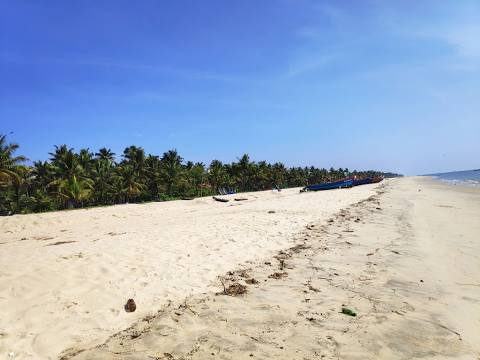
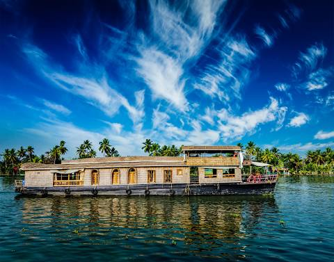
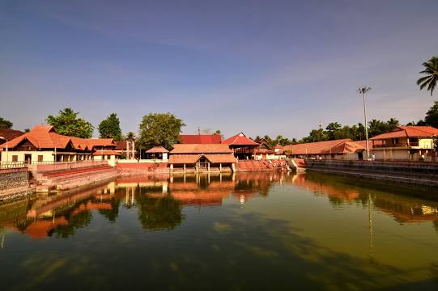

Marari Beach
Marari Beach is a beach at Mararikulam village in Alappuzha District of Kerala, India, 11 km from Alappuzha town.Mararikulam is connected by rail and has a railway station by the same name. It is also well connected by road. NH 66 passes through S.L.Puram, which is 5 km to the east of Mararikulam. Nearest airport is Cochin International Airport.
Pathiramanal Island
Pathiramanal is a small island inMuhamma panchayat of Alappuzha district. The name Pathiramanal means 'midnight sand'. The scenic beauty of both sides of the lake as well as that of the island is mind blowing. It is home to many rare varieties of migratory birds from different parts of the world.
Krishnapuram Palace

The Krishnapuram Palace is a palace and museum located in Kayamkulam near Alappuzha in Alappuzha district, Kerala in southwestern India. It was built in the 18th century by Anizham Thirunal Marthanda Varma, the Travancore kingdom.
Ambalappuzha Sree Krishna Swamy Temple
Ambalappuzha Sree Krishna Swamy Temple is an Indian Hindu temple dedicated to Krishna at Ambalappuzha in Alappuzha district of Kerala. The temple is believed to have been built during 15th century AD by the local ruler Chembakasserry Pooradam Thirunal-Devanarayanan Thampuran.